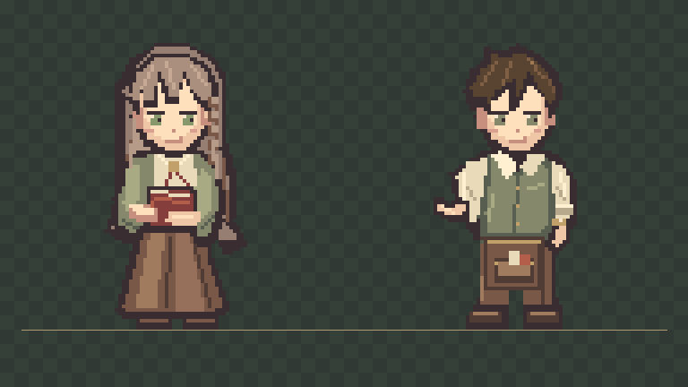
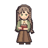
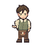

에델린 · 로웬
96×96px · 캐릭터 높이 80px · 같은 발 기준선 · 코드로 직접 작성한 픽셀 클러스터. 정식 교체 전 검토용 테스트입니다.

실제 크기 (1×)


장소 미리보기에서는 인물을 클릭하면 기존 대화가 열립니다. 일반 사이트에서는 기존 원화가 그대로 표시됩니다.
에델린 PNG · 로웬 PNG · 픽셀 스타일 가이드
96×96px · 캐릭터 높이 80px · 같은 발 기준선 · 코드로 직접 작성한 픽셀 클러스터. 정식 교체 전 검토용 테스트입니다.

실제 크기 (1×)


장소 미리보기에서는 인물을 클릭하면 기존 대화가 열립니다. 일반 사이트에서는 기존 원화가 그대로 표시됩니다.
에델린 PNG · 로웬 PNG · 픽셀 스타일 가이드